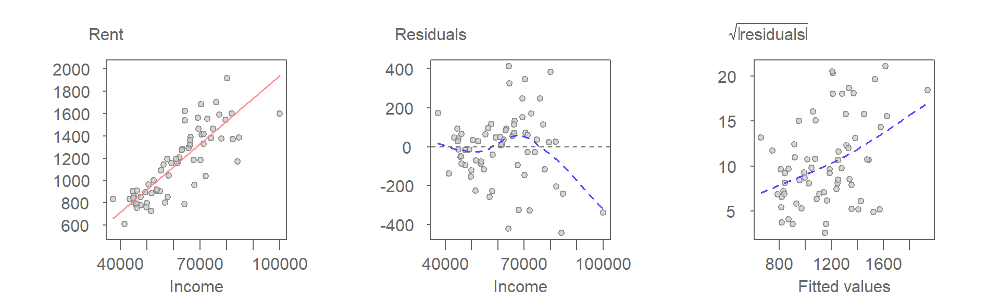
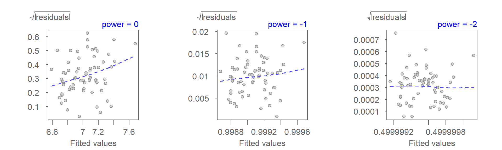
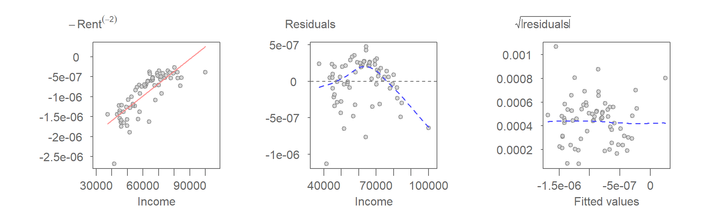
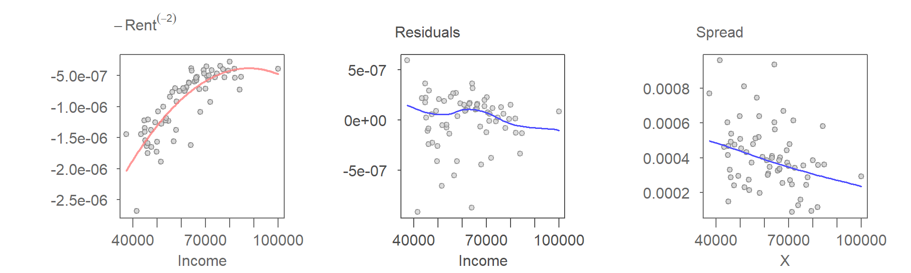
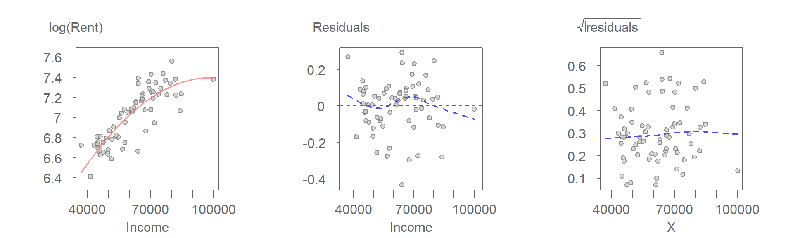
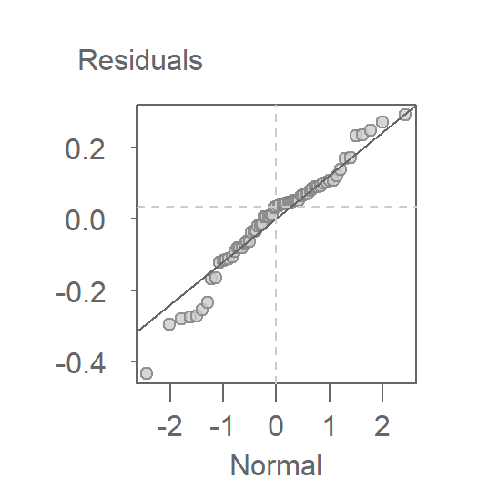

| dplyr | tukeyedar |
|---|---|
| 1.2.0 | 0.5.0 |
33 Refining Bivariate Models Through Re-expression
When bivariate model assumptions, such as homogeneity of spread or normally distributed residuals, are not met, changes in measurement scales through re-expression of one or both variables can help address model shortcomings. While there is no general rule about which variable to re-express (i.e., the \(X\) or \(Y\) variable), theoretical considerations should be taken into account if applicable. An example of an analysis that benefits from re-expression is highlighted in this section.
In this chapter, we will explore the relationship between median rent and median household income for the State of Florida. The data are pulled from the tukeyedar package as follows.
library(dplyr)
library(tukeyedar)
dat <- incrent22 %>% filter(State == "Florida")A demonstration of the workflow follows with a focus on the analysis rather than the code. The functions and code chunks required to generate these plots have been covered in previous chapters, including re-expression which was covered in chapter 22.
33.1 Re-expressing the data
To begin, we will fit a first-order polynomial to the data and examine its diagnostic plots.

The data indicates a clear increase in rent as a function of income, suggesting that a straight-line fit could serve as a reasonable initial estimate.
However, the residuals-dependence plot (2nd plot) reveals a non-random pattern indicating that the model may not fully capture all aspects of the data structure. While the pattern hints at potential curvature, its precise nature remains unclear. The lack of a definitive direction from the residuals-dependence (R-D) plot makes it challenging to determine specific modifications to the fitted model.
The spread-location (S-L) plot (3rd plot), however, provides strong evidence of heteroscedasticity. The fitted LOESS curve exhibits a nearly linear, monotonically increasing trend suggesting that the variance of residuals grows with the fitted values.
The diagnostic plots point to two potential issues: (1) the model may not adequately capture the pattern in the data, and (2) the presence of heteroscedasticity. It is generally advisable to address one issue at a time, as resolving a dominant problem can sometimes mitigate others. Given that heteroscedasticity is the more prominent issue here, we will tackle it first.
Heteroscedasticity can often be corrected by re-expressing one, or both, variables. In this analysis, we will explore power transformations of the rent variable to achieve a more desirable S-L plot. The following three S-L plots represent first-order polynomial fits applied to the data after re-expressing the rent variable using the logarithm, the inverse power (-1), and the inverse squared power (-2). To preserve the nature of the relationship between \(X\) and \(Y\) (i.e. avoiding sign reversal caused by negative powers) we apply a Box-Cox transformation, but note that we could also multiply rent by minus one to preserve the nature of the relationship.

A power transformation of -2 appears to do a good job of stabilizing the variance.
Next, we’ll plot the fitted model and diagnostic plots with the transformed rent values.

The power transformation alters the pattern in the scatter plot, making the curvature—previously only hinted at—more pronounced when using the transformed rent variable. This provides a strong case for considering a curvilinear model. The next set of plots illustrates the results of fitting a second-order polynomial to the data.

The nearly flat Loess curve in the R-D plot suggests that the second-order polynomial effectively captures the underlying pattern in the data. However, this improvement comes at a cost. The S-L plot indicates a monotonically decreasing variance with increasing fitted values.
To address the heteroscedasticity without altering the second-order polynomial fit, we revisit the choice of transformations. Experimenting with several power transformations, we find that a log transformation stabilizes the variance while preserving the curvilinear relationship.

Combining the log transformation with the second-order polynomial fit strikes a reasonable balance between model fit and assumption adherence. The scatter plot shows that a “perfect” model is unlikely, as a few points deviate substantially from the modeled relationship. These outliers may represent counties where the rent-income relationship deviates from the broader trend, potentially exerting disproportionate influence on the model.
With a log-transformed response and a second-order polynomial fit, we now assess whether the residuals meet the assumption of Normality. A Normal QQ plot is shown next:

The Q-Q plot reveals symmetry in the residuals, with no evidence of skew. Within the +/- 1 standard deviation range, the points stay close to the line, though the slight “S” shape at the tails indicates shorter than expected tails.
33.2 Addendum
This example effectively highlights the inherently iterative nature of EDA. As demonstrated by the process of trying different re-expressions and polynomial models, EDA is not a linear process but rather a cycle of exploration, fitting, and refinement, where the results of one step inform the next.
The iterative nature of EDA, combined with the lack of a single “correct” path or answer, allows for a more nuanced and insightful understanding of the data, driven by exploration and the analyst’s judgment.
33.3 Summary
This chapter demonstrates how re-expressing variables can help address violations of model assumptions in bivariate analysis. Using Florida county-level data on median rent and income, the chapter walks through a sequence of model diagnostics, identifying heteroscedasticity and potential curvature in the residuals. Through iterative application of power transformations and polynomial fits, the analysis shows how re-expression can stabilize variance and reveal underlying structure.
While logarithmic transformations are commonly used, re-expression is not limited to logs. Rounded or interpretable powers (e.g., square roots, inverse squares) can often yield better model behavior while preserving interpretability. Theoretical considerations, such as the nature of the measurement scale or expected functional relationships, should also guide the choice of transformation.